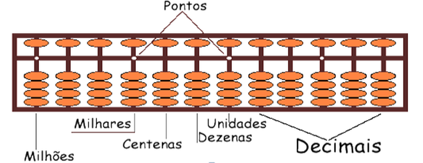
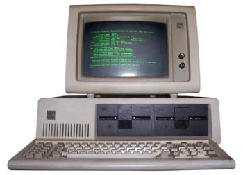

História Computacional
Introdução
A capacidade humana para calcular quantidades nos mais variados modos foi um dos fatores que possibilitaram o desenvolvimento matemático e lógico. Nos primórdios, utilizavam-se os dedos para efetuar cálculos.
A ferramenta mais antiga conhecida para fins computacionais é o ábaco, inventado na Babilônia por volta do ano 2400 a.C. Em sua forma original, consistia em linhas desenhadas na areia, nas quais pedras eram movimentadas para realizar cálculos. Com o passar do tempo, o ábaco evoluiu em design e ainda hoje é utilizado como ferramenta calculadora em várias regiões globais.
O ábaco romano consistia em bolinhas em mármore que deslizavam numa placa em bronze cheia com sulcos. Também surgiram alguns termos matemáticos: em latim "calx" significa mármore, assim "calculos" era uma bolinha correspondente ao ábaco, e fazer cálculos aritméticos era "calculare".
No século V a.C., na antiga Índia, o gramático Pānini formulou a gramática sânscrita usando 3959 regras conhecidas como Ashtadhyāyi, com forma bastante sistemática e técnica. Pānini usou meta-regras, transformações e recursividade com tamanha sofisticação que sua obra possuía o poder computacional teórico tal qual a máquina inventada por Turing.
Entre 200 a.C. e 400, os indianos também inventaram o logaritmo, e a partir do século XIII tabelas logarítmicas eram produzidas por matemáticos islâmicos. Quando John Napier descobriu os logaritmos para uso computacional no século XVI, seguiu-se um período com considerável progresso na construção dessas ferramentas.
John Napier (1550-1617), escocês inventor dos logaritmos, também inventou os ossos criados por Napier, que eram tabelas multiplicativas gravadas num bastão, o que evitava a memorização da tabuada.
A primeira máquina real foi construída por Wilhelm Schickard (1592-1635), sendo capaz para somar, subtrair, multiplicar e dividir. Essa invenção foi perdida durante a guerra, sendo que recentemente foi encontrada alguma documentação sobre ela. Durante muitos anos nada se soube sobre esse invento, por isso, atribuía-se a Blaise Pascal (1623-1662) a construção da primeira máquina calculadora, que fazia apenas somas e subtrações.
Pascal, que aos 18 anos trabalhava num escritório contábil na cidade francesa Rouen, desenvolveu o equipamento para auxiliar o seu trabalho. A calculadora usava engrenagens que a faziam funcionar similarmente a um odômetro. Pascal recebeu uma patente do rei francês para lançar sua invenção no comércio. A comercialização não foi satisfatória devido ao funcionamento pouco confiável, apesar das quase 50 versões construídas.
A máquina Pascal foi criada com objetivo voltado a ajudar seu pai a computar os impostos. O projeto foi bastante aprimorado pelo matemático Gottfried Wilhelm Leibniz (1646-1726), que também inventou o cálculo, o qual sonhou que, um dia no futuro, todo o raciocínio pudesse ser substituído pelo girar numa simples alavanca.
Em 1671, o filósofo alemão Gottfried Wilhelm Leibniz introduziu o conceito focado em realizar multiplicações e divisões usando adições e subtrações sucessivas. Em 1694, o equipamento foi construído, no entanto, sua operação apresentava muita dificuldade e era suscetível a erros.
Em 1820, o parisiense Charles Xavier Thomas, conhecido como Thomas Colmar, projetou e construiu um aparelho capaz para efetuar as 4 operações aritméticas básicas: a Arithmomet. Esta foi a primeira calculadora realmente comercializada com sucesso. Ela fazia multiplicações com o mesmo princípio da calculadora leibniziana e efetuava as divisões com assistência humana.
Todas essas máquinas, porém, estavam longe para serem consideradas um computador, pois não eram programáveis. Isto quer dizer que a entrada aceitava apenas números, mas não instruções sobre o que fazer com eles.
Exemplos do funcionamento do Ábaco

Os algoritmos
No século VII, o matemático indiano Brahmagupta explicou pela primeira vez o sistema numérico hindu-arábico e o uso do 0. Aproximadamente no ano 825, o matemático persa Al-Khwarizmi escreveu o livro Calculando com numerais hindus, responsável pela difusão deste sistema no Oriente Médio, e posteriormente na Europa. Por volta do século XII houve uma tradução deste mesmo livro para o latim: Algoritmi número Indorum. Tais livros apresentaram novos conceitos focados em definir sequências com passos para completar tarefas, como aplicações aritméticas e álgebra. Por derivação desse nome, atualmente usa-se o termo algoritmo.
O primeiro computador
O primeiro computador eletromecânico foi construído por Konrad Zuse (1910-1995). Em 1936, esse engenheiro alemão construiu, a partir dos relés que executavam os cálculos e dados lidos em fitas perfuradas, o Z1.
Há uma grande polêmica em torno do primeiro computador. O Z-1 é considerado por muitos como o primeiro equipamento eletromecânico.
Zuse tentou vender sua invenção ao governo alemão, que desprezou a oferta, já que não poderia auxiliar no esforço bélico. Os projetos ficaram parados durante a guerra, dando a chance aos americanos para desenvolver seus computadores, o chamado Eniac.
Voltar ao topoGaleria
Evolução dos computadores

Contate-nos!
Receba Noticias se inscrevendo!
Painel de Fotos
A beleza do hardware
Sobre o Autor
Enrico Barenho Martins Coelho, autor deste projeto acadêmico de desenvolvimento web. Estudante de tecnologia com foco em interfaces front-end, seguindo as diretrizes de acessibilidade e boas práticas da disciplina de Interface Web do IFRS.